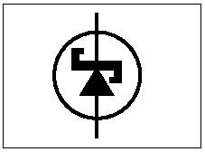
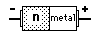

|


Junction of lightly doped n-type semiconductor with a metal electrode.
|
The junction of a doped semiconductor (usually n-type) with a metal electrode can produce a very fast-switching diode which is mainly used in high frequency circuits or high speed digital circuits. Under forward bias, the electrons move from the n-type material to the metal and give up their energy quickly. There are no holes (minority carriers), so the conduction quickly stops upon change to reverse bias. Schottky diodes find application as rectifiers for high frequency signals.
|